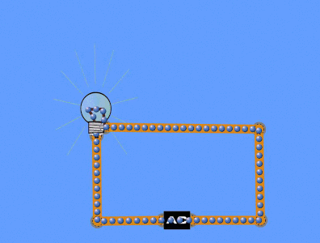
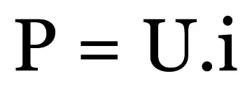

Energia
Ligações Elétrica
Corrente elétrica alternada
Na corrente elétrica alternada, o sentido do movimento dos elétrons é periodicamente
invertido devido à uma inversão na polaridade do potencial que é aplicado ao condutor.

Tensão elétrica
É a diferença em energia potencial elétrica por unidade de carga elétrica entre
dois pontos. Sua unidade de medida é o volts homenagem ao físico italiano Alessandro Volta.
Resistência
É uma propriedade física com função de se opor à passagem de corrente
elétrica no circuito e de dissipar a energia térmica.
Isolante elétrico
Os materiais isolantes são aqueles que oferecem grande oposição à passagem de
cargas elétricas.
Condutor
Condutores, no contexto da física e da engenharia elétrica, são materiais nos quais as
cargas elétricas se deslocam de maneira relativamente livre.
lista do maior condutos para o menor:
- Prata
- Cobre
- Ouro
- Aluminio
- Zinco
- Niquel
- Latão
- Bronze
Fios Compatíveis
| Dimensonamento dos fios |
| mm | corrente |
| 2,5 | 20 |
| 4 | 25 |
| 6 | 35 |
| 10 | 50 |
| 16 | 65 |
Potência Elétrica
A potência elétrica é uma grandeza física que mede a quantidade de trabalho realizado
em determinado intervalo de tempo

Questões
1) Fio para uma lampada de 100w na tensão de 127v?
2) Fio correto para uma tomada para uso de uma Air fly de 1500w com tensão de 110v? E tensão de 220v?
3) Fio correto para chuveiro de 5500w na tensão de 123v? E tensão de 220v?
4) Fio para uma tomada uso de secador de cabelo 2200w em tensão de 127?